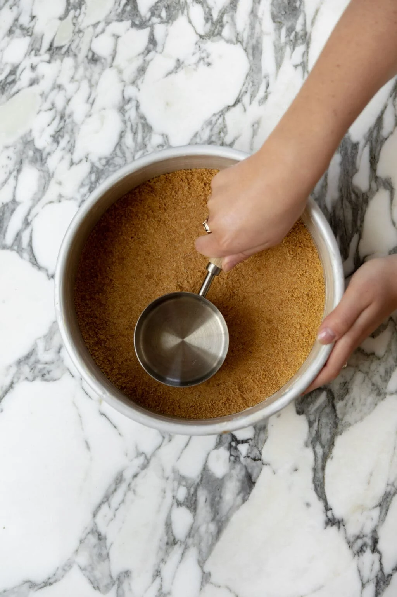
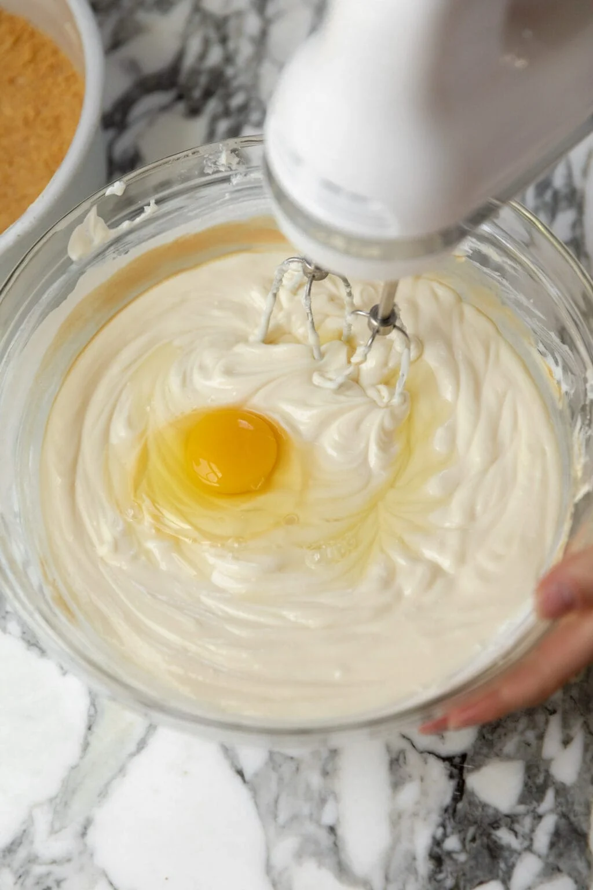
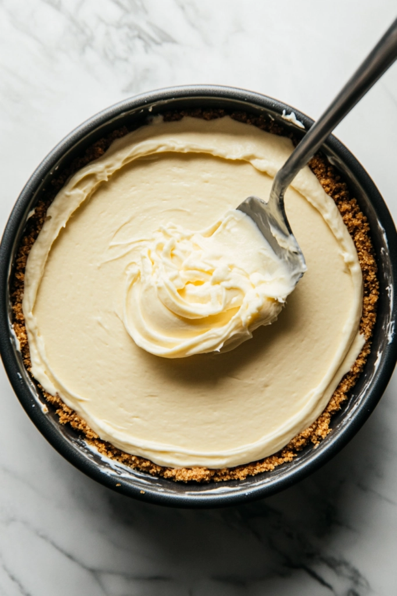
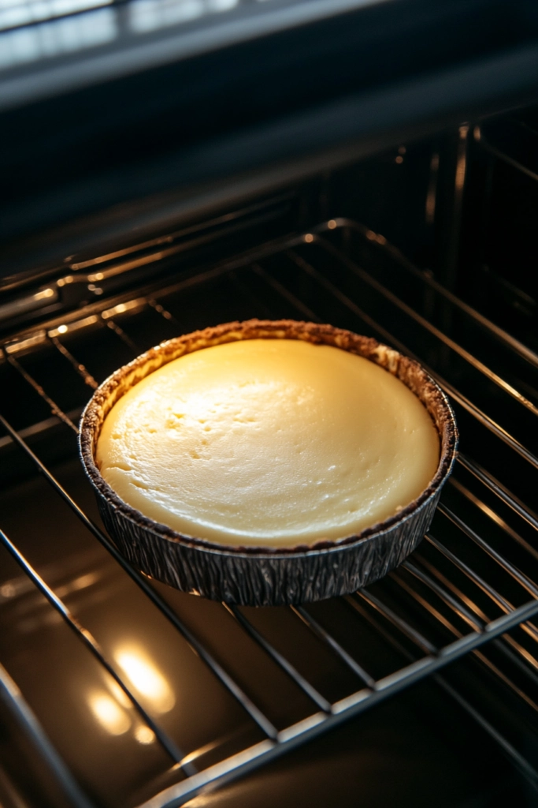
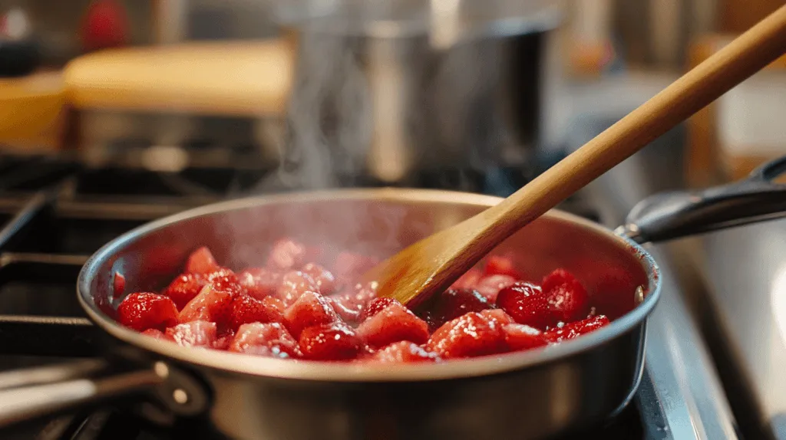
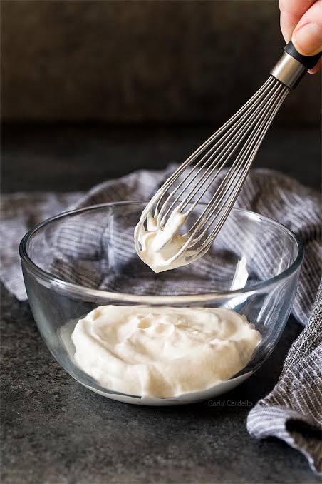

3 phases, 18 steps
Instructions

phase 1
making the crust
- Preheat oven to 325°F (163°C). Grease a 9×13 pan.
- Combine the crust ingredients in a small bowl. Press the mixture into the bottom of the prepared pan.
- Bake the crust for 10 minutes, then set aside to cool.



phase 2
making the filling
- Reduce the oven temperature to 300°F (148°C).
- In a large bowl, blend the cream cheese, sugar and flour on low speed until completely combined and smooth. Using low speed reduces the amount of air added to the batter, which can cause cracks. Scrape down the sides of the bowl.
- Add the sour cream and vanilla extract and mix on low speed until well combined.
- Add eggs one at a time, mixing slowly to combine. Scrape down the sides of the bowl as needed to make sure everything is well combined.
- Pour the batter into the pan with the crust and spread evenly.
- Bake the cheesecake for 30 minutes.
- Turn off the oven and leave the cheesecake in the oven with the door closed for 20 minutes.
- Crack the door of the oven, with the cheesecake inside, for 15 minutes. This slow cooling process helps prevent the cheesecake from cracking.
- Put the cheesecake in the fridge to cool completely, 3-4 hours.


phase 3
final touches!
- To make the strawberry topping, combine the sugar and cornstarch in a large saucepan. Stir in the strawberry puree.
- Cook over medium heat, stirring constantly until the mixture thickens and comes to a boil, about 15 to 20 minutes.
- Allow to boil for 1 1/2 minutes, then remove from heat.
- Stir in vanilla extract and chopped strawberries and allow to cool for about 15-20 minutes.
- Pour the topping over the cheesecake. You can add the sauce while the cheesecake is chilling and let it all cool together, let the sauce cool on its own and add it before serving, or even add it as you cut slices. The topping will thicken as it cools.
- To make the whipped cream, add everything to a large mixer bowl and whip on high speed until stiff peaks form. Serve slices of the cheesecake with the whipped cream, if desired.